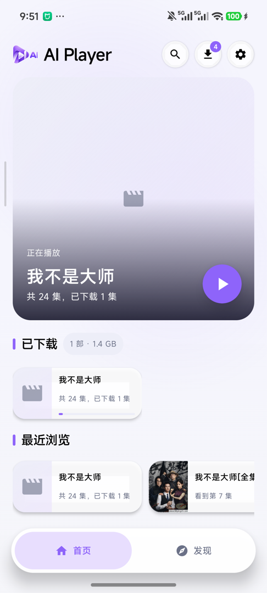
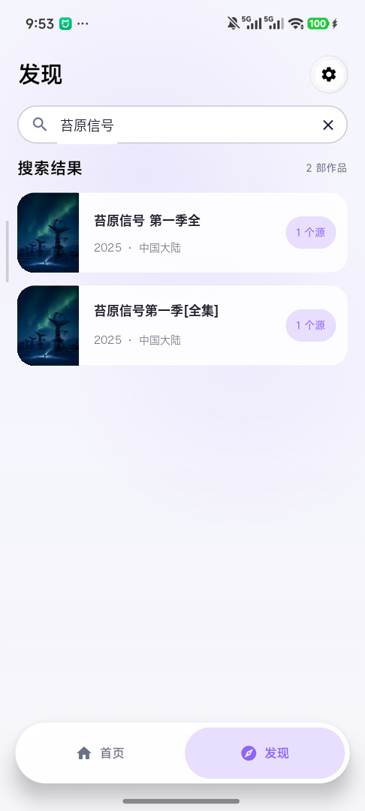
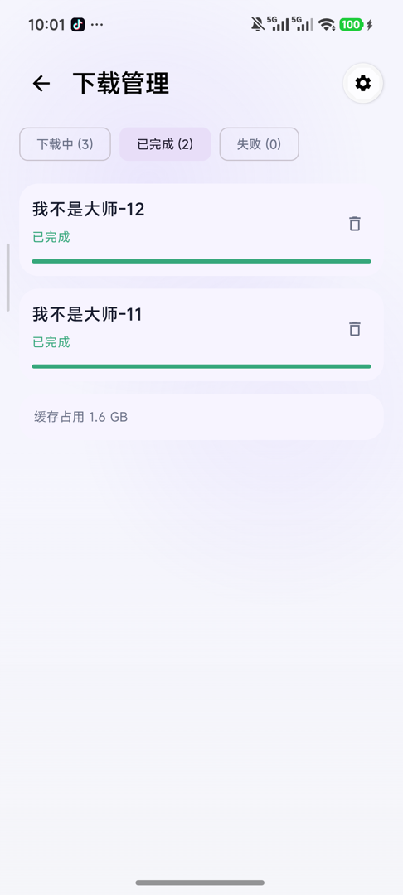
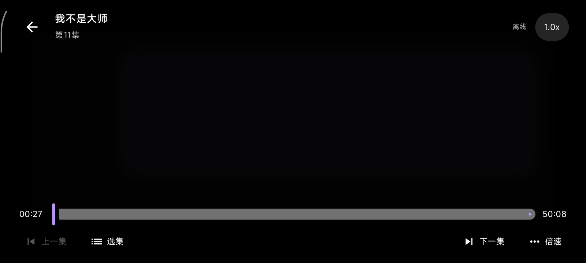
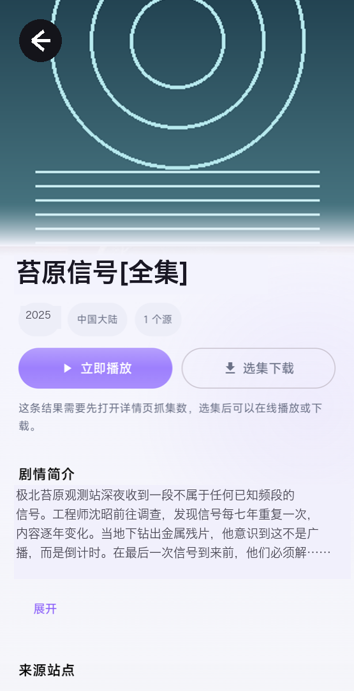
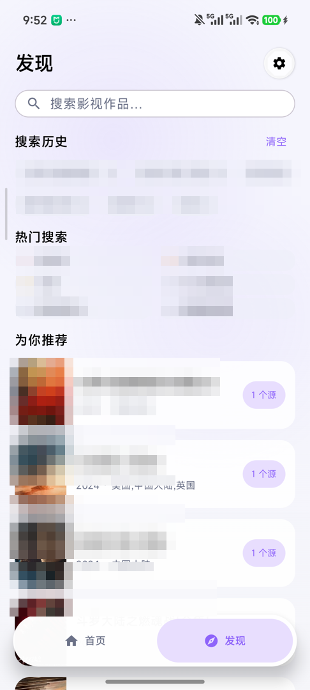

跨源订阅搜索、离线下载、
秒开缓存播放。

搜到、下下来、播得了。这三步之外的东西，全部不做。 没有片库推荐算法，没有会员体系，没有社交，没有弹窗广告， 也没有任何统计 SDK 在后台偷偷上报。
App 出厂时订阅源列表是空的，这是刻意的设计。 你自己添加站点，你自己决定看什么。 所有播放进度、下载记录、订阅配置，只存在这台设备上。 卸载即彻底消失，不留在任何服务器。
一次输入，并行问遍所有已启用的站点。同名作品自动合并，标注来自几个源，哪个源快用哪个。
基于 Media3 DownloadManager 与 SQLite 索引。杀进程自动恢复，选集批量、暂停续传、失败分类重试。
离线模式只读本地缓存，飞行模式照常打开。在线看过的内容顺手写入缓存，重看秒开。
搜索请求并行打到每一个启用的站点，不排队、不轮询。 返回结果按作品名做归并，同一部片子在不同站点出现， 会合并成一条，标上「N 个源」。

每一个下载任务都有持久化索引。App 被系统杀掉、手机重启、 网络切换，再打开时队列从断点恢复，不会出现「下到一半归零」。

播放页面上几乎所有操作都能用手势完成。不用低头找按钮，不用点开二级菜单。
| 手势 | 动作 |
|---|---|
| 长按 + 上下滑 | 调倍速。上滑 1.5× / 2× / 3×，下滑 0.75× / 0.5×，松手恢复原速 |
| 横向拖动 | 快进快退。拖动时中央显示预览时间，松手才真正跳转 |
| 双击左边缘 | 后退 10 秒 |
| 双击右边缘 | 前进 10 秒 |
| 双击中间 | 播放 / 暂停 |
| 单击 | 显示 / 隐藏控件栏 |
| 左侧上下滑 | 调屏幕亮度，退出播放页自动恢复系统亮度 |
| 右侧上下滑 | 调媒体音量 |

单指状态机在首次超过触摸阈值时锁定方向：横着走就走快进，竖着走就调亮度或音量，一次手势内不再改变。 长按激活倍速后，横向拖动自动让位。控件按钮被按下时，整次手势让位，不会出现「想点按钮却跳了进度」。
App 不内置任何视频源。第一次打开时列表是空的，这不是 bug，是设计。
设置 → 订阅源 → 填入站点首页地址。App 自动探测该站的搜索规则，探测成功后规则缓存复用，下次不用再等。
在发现页输入片名。结果按作品名合并，标注每个作品来自几个源，你选一个源进入详情。
有可播线路的直接在线看，自动写入缓存；想留着的选集下载，之后断网也能打开。


竖屏 390 × 844，横屏 854 × 408。浅色与深色两套主题，跟随系统自动切换。
海报使用共享元素转场，从列表进入详情时图片连续过渡而不是淡入。 播放控制层淡入淡出，不抢占画面。 系统开启「移除动画」时，App 内所有动画自动关闭。 深浅色两套配色都经过对比度校准，正文对背景不低于 WCAG AA。
本项目只提供播放器与订阅框架，不内置、不推荐、不附带任何视频源。 你必须确保对所添加源的内容拥有合法访问权限。 因使用本工具访问、下载、传播侵权内容而产生的一切后果，由使用者自行承担。 项目作者不对任何第三方站点的内容负责。本文档中的订阅源与片单均为演示数据。
任何人分发本程序的修改版本（包括以服务端形式部署），必须同样以 AGPL-3.0 开源。 这条约束的目的很直接：防止有人拿这个项目套个壳做成闭源商业产品。
一个不打扰你的播放器。
没有广告、没有账号、没有后台。